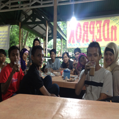
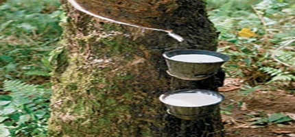

Artikel Post
-

Nama ane Bagus Eka Sasmitha atau Eko Bagus Sasmito. ene biasa dipanggil Bagus, Bagus CarLof, or Eko "Haram memanggil ane Eko kecuali Kaki Nini". Ane anak pertamo dari 3 bersaudara, ane bukan tipe anak yang penurut, tapi ane juga paling takut samo yang namoe "kemarahan Ibu". Pandangan "Setiap orang sudah mempunyai batas kemampuan masing-masing, Lebih baik mengoptimalkan kemampuan daripada memaksakan diri untuk mempelajari sesuatu yang diluar batas kemampuan". Keseharian ngebikin lagu entah bernuansa Rock, Pop, Jazz, atau bahkan dangdut.
Menurut pandangan Ane, lagu adalah simbol atau kata-kata yang dijadikan dalam satu bait-bait nada yang mewakili ungkapan jiwa. Ane mulai mengenal musik sedari ane masih belum "makan bangku sekolah". Melalui lagu ane dapat meluapkan emosi tanpa harus banting piring "entar kalau makan gimana cubo ?", ngelempar HP "sayang harganya mahal", atau update status "udah terlalu banyak orang galau", nah loh, mulai mikir kan lo, ckckck. Makanya daripada galau entah karena lo lagi bokek, putus cinta, atau apalah lebih lo lakuin kesibukan yang lebih positif entah lo mau bikin lagi, hangout bareng temen-temen lo, atau kalau lo orang yang religius lebih baik lo pertebal ibadah lo. DAripada lo update-update status, itu samo bae kau buka' aib barang siki'-siki'. Read More...
Pohon Karet

Pohon karet para pertama kali hanya tumbuh di Amerika Selatan, namun setelah percobaan berkali-kali oleh Henry Wickham, pohon ini berhasil dikembangkan di Asia Tenggara, di mana sekarang ini tanaman ini banyak dikembangkan; sekarang Asia merupakan sumber karet alami. Lebih dari setengah karet yang digunakan sekarang ini adalah sintetik, tetapi beberapa juta ton karet alami masih diproduksi setiap tahun, dan masih merupakan bahan penting bagi beberapa industri termasuk otomotif dan militer.
Karet hypoallergenic dapat dibuat dari Guayule. Eksperimen awal dari pengembangan karet sintetis membawa ke penemuan Silly Putty. Karet alami seringkali divulkanisasi, seubah proses yang memanaskan karet dan ditambah belerang untuk meningkatkan "resilience" dan elastisitas. Proses vulkanisasi meningkatkan durabilitas dan penggunaan karet dari 1830-an sampai sekarang. Pengembangan sukses vulkanisasi dihubungkan dengan Charles Goodyear. Read More...